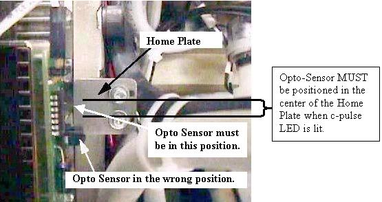
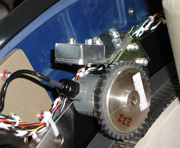

Operating Documentation
Direction 5196839-800, Rev# 6
RT16 and Xtra Service Info Adv
Operating Documentation |
| Required Persons | Preliminary Reqs | Procedure | Finalization |
|---|---|---|---|
| 1 |
| Last Revised: | November 2004 |
| Always turn OFF the HVDC before the 120 VAC. Turning OFF 120 VAC power before HVDC power can result in equipment damage. | |
Turn off the Axial Drive and the HVDC switches located on the Service Switch Panel.
| NOTE: | The c-pulse and scribed line on the Encoder gear are Factory set. Do NOT loosen and screws on the Encoder gear. |
Rotate the gantry until the opto-sensor is in the center of the home plate. See Illustration 1 for example of Good and Wrong sensor locations on the Home Plate.
Illustration 1: Home Plate Passing Through Opto-Sensor Window

The table below will identify the LED number depending on your system configuration of either individual MSUB and TGP boards or the combined TGPU single board.
Verify that the HomeFlag (HFLG) LED lights up. Notice that when the gantry is rotated, Channel A and Channel B) flash. The Home Flag LED should only light up when the home plate is in the opto-sensor window. Once the Home Flag LED is on, rotate the gantry ± 1 degree. Verify that the Channel C (c-pulse) lights up. Notice that the Channel C LED might not stay on but rather just flash. The key is to stop rotating the gantry as soon as the Channel C LED flashes. If the Channel C LED flashes or lights up, you have coincided with the c-pulse and are finished if the opto-sensor is still in the center of the Home Plate, otherwise continue with the next step.
Table 1: LED Designators for MSUB or TGPU
| Name | Label | MSUB LED# | TGPU LED # |
| Channel A | CHA | DS10 | DS14 |
| Channel B | CHB | DS13 | DS15 |
| Channel C (c-pulse) | CHC | DS15 | DS16 |
| Home Flag | HFLG | DS14 | DS17 |
The TGPU is a single board replacement for both the MSUB and TGP boards. The above table shows the LED numbers for each board configuration.
If the c-pulse does not flash or light up, verify that the home plate is in the center of the opto-sensor, and lift as well as rotate the encoder gear assembly one tooth at a time in each direction until the c-pulse lights up (see Illustration 2 ). If the c-pulse is not lined up with the center of the home plate, images may appear slightly tilted or rotated.
Illustration 2: Encoder

No finalization required.